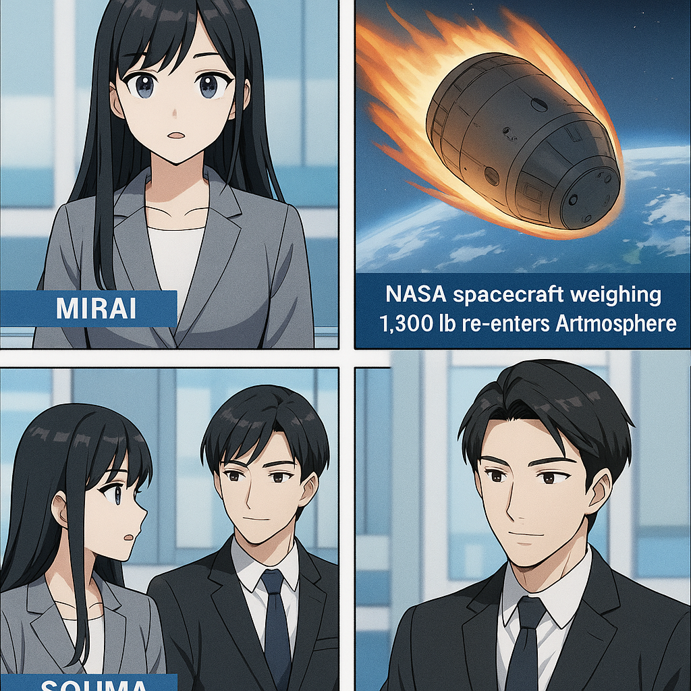

こんにちは！新人ニュースキャスターのミライです。 今日はNASAの宇宙探査機についてのニュースをわかりやすくお伝えしますね。 NASAが持っている探査機のひとつ、「Van Allen Probe（ヴァン・アレン・プローブ）」という宇宙船が、地球の大気に再突入しました。この宇宙船は重さ約1,300ポンド、つまり約590キログラムあります。 地球の大気に入ると通常、宇宙船の多くの部分は熱で燃え尽きてしまいます。今回も多くの部分が燃え尽きると予想されているんですが、NASAによると、ごく一部の部品は燃え尽きずに地表に落ちてくる可能性があるそうです。 ただし、その部品に当たる人が出るリスクは非常に低い、ということなのでご安心ください。 つまり、宇宙船の大部分は空で燃えてしまい、安全に地球に戻ってきたというニュースでした。 以上、ミライがお伝えしました！

国際情勢アナリストのソウマです。 今回、Nasaの重量約590kgの宇宙船が地球の大気圏に再突入しました。これは宇宙開発や気象観測ミッションの一環であり、再突入技術の検証や廃棄物管理の面で重要です。安全に制御された再突入が行われれば、宇宙空間のゴミ問題の緩和にもつながり、各国の宇宙活動における責任ある運用のモデルケースとなるでしょう。国際協力や規制の強化にも影響を与える可能性があります。
トップへ戻る